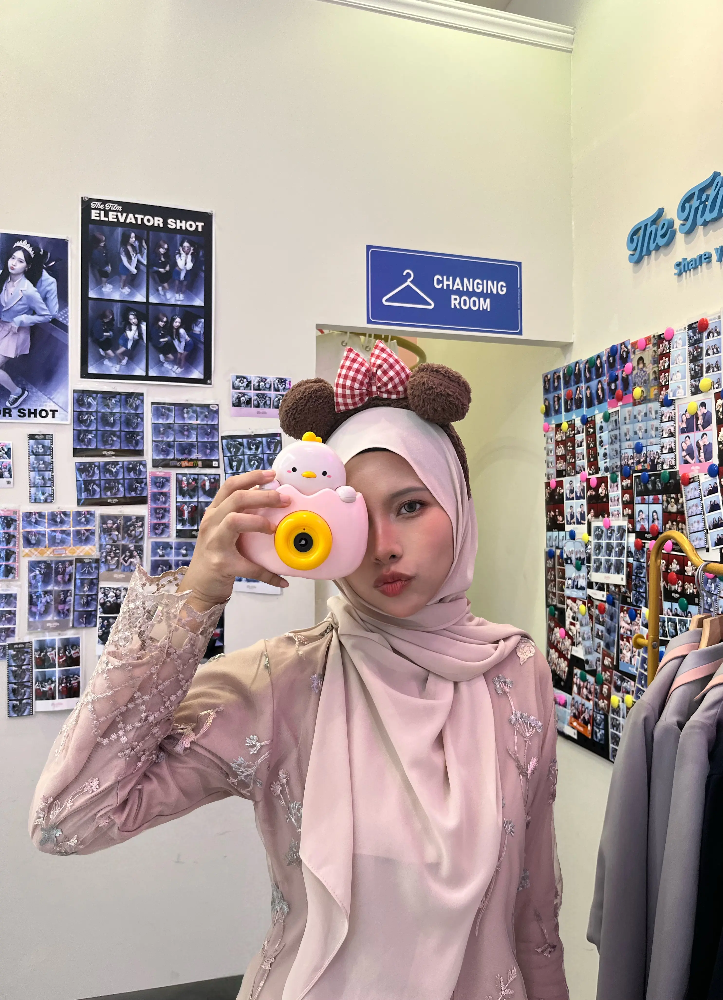

Portfolio · 2026
Let’s connect ↗02 · Behind the work
From numbers to narratives.
My journey into marketing was not a perfectly straight line, and that became one of the most valuable parts of it.
I began with a Diploma in Investment Analysis, where I learned to work with information, examine details, and think carefully before reaching a conclusion. However, I gradually realised that I was equally interested in how ideas were presented: how visuals attracted attention, how messages influenced people, and how creativity could make information easier to understand.
That curiosity led me to pursue a degree in Marketing.
Marketing gave my analytical and creative sides a place to meet. Through university assignments and student-led projects, I began exploring content creation, visual communication, event promotion, presentation design, and digital experiences. Each project allowed me to test an idea, learn a new tool, and understand how creative decisions should support a wider purpose.
My internship at IPC Malaysia B.V. introduced me to a more structured corporate environment. Working in procurement strengthened my skills accurately. At the same time, my internship project allowed me to explore B2B side of marketing, something I rarely involved in.
Together, these experiences have shaped the way I approach my work: creatively, thoughtfully, and with a willingness to keep learning.
Now I'm more open for my next chapter.
